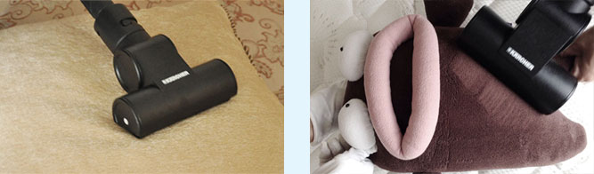

写到这里，小马自己已经头皮发麻，浑身瘙痒了。赶紧行动起来，预约除螨服务，给自己、给家人多一份关爱和健康！

每天你和600万只螨虫一起睡，晚上螨虫在你脸上开party，你造吗！！
螨虫是至今世界上已知的最强烈的过敏源，对血和co2有强烈的趋向性，是引起过敏性皮炎、皮肤瘙痒等皮肤疾病的罪魁祸首，同时可导致儿童鼻炎、咳嗽等疾病，导致夜晚哭闹不睡觉。
炎炎夏季螨虫进入繁殖高峰期，成年人的螨虫感染率高达97％，仅仅是简单的清洗被子和床单并不能有效清除螨虫，阳光下晾晒及拍打的效果也是远远不够的，为了自己和家人的健康，我们要彻底消灭螨虫！
近日小马亲自到用户家里实际考察了除螨服务的效果！让大家瞧瞧有多么震惊！（感谢望京客户张女士提供照片）整床除螨实际操作，包括棉被、枕头、床单、床垫等常规床上用品。（PS：小马的管家MM很专业吧）
布艺沙发除螨，沙发是我们在家里经常停留的地方，清洗沙发套通常只能洗掉表面尘土，小马可以深度杀除隐藏在边角的螨虫，分分钟还您一个安全健康的休息环境。
写到这里，小马自己已经头皮发麻，浑身瘙痒了。赶紧行动起来，预约除螨服务，给自己、给家人多一份关爱和健康！